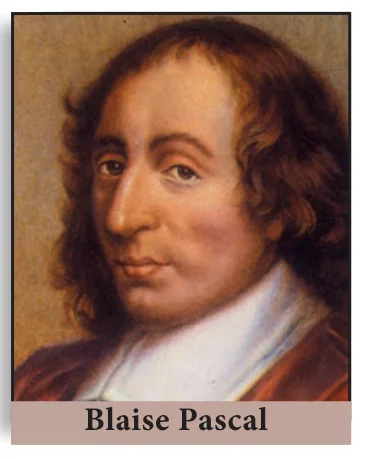
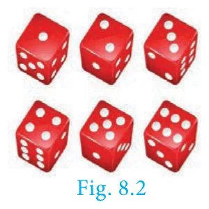
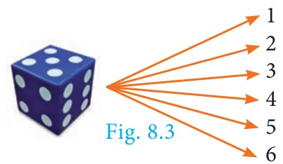
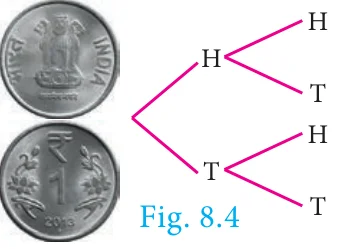
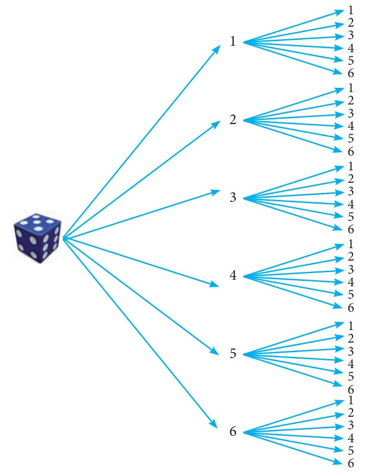
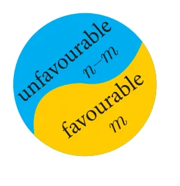
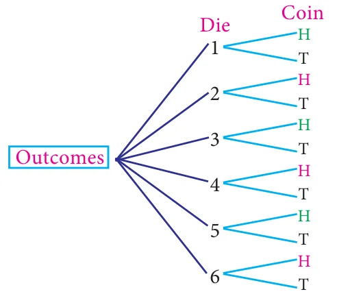
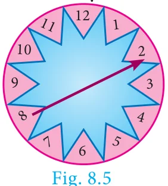

8.4 Probability

Few centuries ago, gambling and gaming were considered to be fashionable and became widely popular among many men. As the games became more complicated, players were interested in knowing the chances of winning or losing a game from a given situation. In 1654, Chevalier de Mere, a French nobleman with a taste of gambling, wrote a letter to one of the prominent mathematician of the time, Blaise Pascal, seeking his advice about how much dividend he would get for a gambling game played by paying money. Pascal worked this problem mathematically but thought of sharing this problem and see how his good friend and mathematician Pierre de Fermat could solve. Their subsequent correspondences on the issue represented the birth of Probability Theory as a new branch of mathematics.
Random Experiment
A random experiment is an experiment in which
(i) The set of all possible outcomes are known (ii) Exact outcome is not known.
Example : 1. Tossing a coin. 2. Rolling a die.
Sample space

The set of all possible outcomes in a random experiment is called a sample space. It is generally denoted by \(S\).
Example : When we roll a die, the possible outcomes are the face numbers 1, 2, 3, 4, 5, 6 of the die. Therefore the sample space is \(S = \{1, 2, 3, 4, 5, 6\}\)
Sample point Each element of a sample space is called a sample point.
8.4.1 Tree diagram
Tree diagram allow us to see visually all possible outcomes of an random experiment. Each branch in a tree diagram represent a possible outcome.
Illustration

(i) When we throw a die, then from the tree diagram (Fig.8.3), the sample space can be written as \(S = \{1, 2, 3, 4, 5, 6\}\)

(ii) When we toss two coins, then from the tree diagram (Fig.8.4), the sample space can be written as \(S = \{HH, HT, TH, TT\}\)
Progress Check
- An experiment in which a particular outcome cannot be predicted is called _______.
- The set of all possible outcomes is called _______.
Example 8.17
Express the sample space for rolling two dice using tree diagram.
Solution
When we roll two dice, since each die contain 6 faces marked with 1, 2, 3, 4, 5, 6 the tree diagram will look like

Hence, the sample space can be written as
\[\begin{aligned} S = \{ &(1,1), (1,2), (1,3), (1,4), (1,5), (1,6) \\ &(2,1), (2,2), (2,3), (2,4), (2,5), (2,6) \\ &(3,1), (3,2), (3,3), (3,4), (3,5), (3,6) \\ &(4,1), (4,2), (4,3), (4,4), (4,5), (4,6) \\ &(5,1), (5,2), (5,3), (5,4), (5,5), (5,6) \\ &(6,1), (6,2), (6,3), (6,4), (6,5), (6,6) \} \end{aligned}\]
Event: In a random experiment, each possible outcome is called an event. Thus, an event will be a subset of the sample space.
Example : Getting two heads when we toss two coins is an event.
Trial : Performing an experiment once is called a trial.
Example : When we toss a coin thrice, then each toss of a coin is a trial.
| Events | Explanation | Example |
|---|---|---|
| Equally likely events | Two or more events are said to be equally likely if each one of them has an equal chance of occurring. | Head and tail are equally likely events in tossing a coin. |
| Certain events | In an experiment, the event which surely occur is called certain event. | When we roll a die, the event of getting any natural number from one to six is a certain event. |
| Impossible events | In an experiment if an event has no scope to occur then it is called an impossible event. | When we toss two coins, the event of getting three heads is an impossible event. |
| Mutually exclusive events | Two or more events are said to be mutually exclusive if they don’t have common sample points. i.e., events \(A, B\) are said to be mutually exclusive if \(A \cap B = \phi\). | When we roll a die the events of getting odd numbers and even numbers are mutually exclusive events. |
| Exhaustive events | The collection of events whose union is the whole sample space are called exhaustive events. | When we toss a coin twice, the collection of events of getting two heads, exactly one head, no head are exhaustive events. |
| Complementary events | The complement of an event \(A\) is the event representing collection of sample points not in \(A\). It is denoted \(A'\) or \(A^c\) or \(\overline{A}\) The event \(A\) and its complement \(A'\) are mutually exclusive and exhaustive. | When we roll a die, the event ‘rolling a 5 or 6’ and the event of rolling a 1, 2, 3 or 4 are complementary events. |
Note
Elementary event: If an event \(E\) consists of only one outcome then it is called an elementary event.
Do you know?
In 1713, Bernoulli was the first to recognise the wide-range applicability of probability in fields outside gambling
8.4.2 Probability of an Event
In a random experiment, let S be the sample space and \(E \subseteq S\). Then if \(E\) is an event, the probability of occurrence of \(E\) is defined as
\[P(E) = \frac{\text{Number of outcomes favourable to occurence of } E}{\text{Number of all possible outcomes}} = \frac{n(E)}{n(S)}\]
This way of defining the probability is applicable only to finite sample spaces. So in this chapter, we will be dealing problems only with finite sample spaces.
Note
- \(P(E) = \dfrac{n(E)}{n(S)}\)
- \(P(S) = \dfrac{n(S)}{n(S)} = 1\). The probability of sure event is 1.
- \(P(\phi) = \dfrac{n(\phi)}{n(s)} = \dfrac{0}{n(s)} = 0\). The probability of impossible event is 0.
- Since \(E\) is a subset of \(S\) and \(\phi\) is a subset of any set,
Therefore, the probability value always lies from 0 to 1.
\(\phi \subseteq E \subseteq S\)
\(P(\phi) \le P(E) \le P(S)\)
\(0 \le P(E) \le 1\)
- The complement event of \(E\) is \(\overline{E}\).

Let \(P(E) = \dfrac{m}{n}\) (where \(m\) is the number of favourable outcomes of \(E\) and \(n\) is the total number of possible outcomes).
\(P(\overline{E}) = \dfrac{\text{Number of outcomes unfavourable to occurance of } E}{\text{Number of all possible outcomes}}\)
\(P(\overline{E}) = \dfrac{n - m}{n} = 1 - \dfrac{m}{n}\)
\(P(\overline{E}) = 1 - P(E)\)
- \(P(E) + P(\overline{E}) = 1\)
Progress Check
Which of the following values cannot be a probability of an event?
(a) \(-0.0001\) (b) 0.5 (c) 1.001 (d) 1 (e) 20% (f) 0.253 (g) \(\dfrac{1 - \sqrt{5}}{2}\) (h) \(\dfrac{\sqrt{3} + 1}{4}\)
Example 8.18
A bag contains 5 blue balls and 4 green balls. A ball is drawn at random from the bag. Find the probability that the ball drawn is (i) blue (ii) not blue.
Solution
Total number of possible outcomes \(n(S) = 5 + 4 = 9\)
- Let \(A\) be the event of getting a blue ball.
Number of favourable outcomes for the event A. Therefore, \(n(A) = 5\)
Probability that the ball drawn is blue. Therefore, \(P(A) = \dfrac{n(A)}{n(S)} = \dfrac{5}{9}\) - \(\overline{A}\) will be the event of not getting a blue ball. So \(P(\overline{A}) = 1 - P(A) = 1 - \dfrac{5}{9} = \dfrac{4}{9}\)
Example 8.19
Two dice are rolled. Find the probability that the sum of outcomes is (i) equal to 4 (ii) greater than 10 (iii) less than 13
Solution
When we roll two dice, the sample space is given by
\[\begin{aligned} S = \{ &(1,1), (1,2), (1,3), (1,4), (1,5), (1,6) \\ &(2,1), (2,2), (2,3), (2,4), (2,5), (2,6) \\ &(3,1), (3,2), (3,3), (3,4), (3,5), (3,6) \\ &(4,1), (4,2), (4,3), (4,4), (4,5), (4,6) \\ &(5,1), (5,2), (5,3), (5,4), (5,5), (5,6) \\ &(6,1), (6,2), (6,3), (6,4), (6,5), (6,6) \};\ n(S) = 36 \end{aligned}\]
- Let \(A\) be the event of getting the sum of outcome values equal to 4.
Then \(A = \{(1,3), (2,2), (3,1)\};\ n(A) = 3\).
Probability of getting the sum of outcomes equal to 4 is \(P(A) = \dfrac{n(A)}{n(S)} = \dfrac{3}{36} = \dfrac{1}{12}\) - Let B be the event of getting the sum of outcome values greater than 10.
Then \(B = \{(5,6), (6,5), (6,6)\};\ n(B) = 3\)
Probability of getting the sum of outcomes greater than 10 is \(P(B) = \dfrac{n(B)}{n(S)} = \dfrac{3}{36} = \dfrac{1}{12}\) - Let C be the event of getting the sum of outcomes less than 13. Here all the outcomes have the sum value less than 13. Hence \(C = S\).
Therefore, \(n(C) = n(S) = 36\)
Probability of getting the total value less than 13 is \(P(C) = \dfrac{n(C)}{n(S)} = \dfrac{36}{36} = 1\).
Example 8.20
Two coins are tossed together. What is the probability of getting different faces on the coins?
Solution
When two coins are tossed together, the sample space is
\(S = \{HH, HT, TH, TT\};\ n(S) = 4\)
Let \(A\) be the event of getting different faces on the coins.
\(A = \{HT, TH\};\quad n(A) = 2\)
Probability of getting different faces on the coins is \(P(A) = \dfrac{n(A)}{n(S)} = \dfrac{2}{4} = \dfrac{1}{2}\)
Example 8.21
What is the probability that a leap year selected at random will contain 53 saturdays.
Solution
A leap year has 366 days. So it has 52 full weeks and 2 days. 52 Saturdays must be in 52 full weeks.
The possible chances for the remaining two days will be the sample space.
\(S = \{\text{Sun-Mon, Mon-Tue, Tue-Wed, Wed-Thu, Thu-Fri, Fri-Sat, Sat-Sun}\}\)
\(n(S) = 7\)
Let \(A\) be the event of getting 53rd Saturday.
Then \(A = \{\text{Fri-Sat, Sat-Sun}\};\ n(A) = 2\)
Probability of getting 53 Saturdays in a leap year is \(P(A) = \dfrac{n(A)}{n(S)} = \dfrac{2}{7}\)
Thinking Corner
What will be the probability that a non-leap year will have 53 Saturdays?
Example 8.22
A die is rolled and a coin is tossed simultaneously. Find the probability that the die shows an odd number and the coin shows a head.
Solution

Sample space
\(S = \{1H, 1T, 2H, 2T, 3H, 3T, 4H, 4T, 5H, 5T, 6H, 6T\};\)
\(n(S) = 12\)
Let \(A\) be the event of getting an odd number and a head.
\(A = \{1H, 3H, 5H\};\ n(A) = 3\)
\(P(A) = \dfrac{n(A)}{n(S)} = \dfrac{3}{12} = \dfrac{1}{4}\)
Activity 3
There are three routes \(R_1, R_2\) and \(R_3\) from Madhu’s home to her place of work. There are four parking lots \(P_1, P_2, P_3, P_4\) and three entrances \(B_1, B_2, B_3\) into the office building. There are two elevators \(E_1\) and \(E_2\) to her floor. Using the tree diagram explain how many ways can she reach her office?
Activity 4
Collect the details and find the probabilities of
- selecting a boy from your class.
- selecting a girl from your class.
- selecting a student from tenth standard in your school.
- selecting a boy from tenth standard in your school.
- selecting a girl from tenth standard in your school.
Example 8.23
A bag contains 6 green balls, some black and red balls. Number of black balls is as twice as the number of red balls. Probability of getting a green ball is thrice the probability of getting a red ball. Find (i) number of black balls (ii) total number of balls.
Solution
\[\begin{aligned} \text{Number of green balls is } n(G) &= 6 \\ \text{Let number of red balls is } n(R) &= x \\ \text{Therefore, number of black balls is } n(B) &= 2x \\ \text{Total number of balls } n(S) &= 6 + x + 2x = 6 + 3x \\ \text{It is given that, } P(G) &= 3 \times P(R) \\ \frac{6}{6 + 3x} &= 3 \times \frac{x}{6 + 3x} \\ 3x &= 6 \text{ gives, } x = 2 \end{aligned}\]
(i) Number of black balls \(= 2 \times 2 = 4\)
(ii) Total number of balls \(= 6 + (3 \times 2) = 12\)
Example 8.24
A game of chance consists of spinning an arrow which is equally likely to come to rest pointing to one of the numbers 1, 2, 3, …12. What is the probability that it will point to (i) 7 (ii) a prime number (iii) a composite number?
Solution

Sample space \(S = \{1, 2, 3, 4, 5, 6, 7, 8, 9, 10, 11, 12\};\ n(S) = 12\)
- Let \(A\) be the event of resting in 7. \(n(A) = 1\)
\(P(A) = \dfrac{n(A)}{n(S)} = \dfrac{1}{12}\)
- Let \(B\) be the event that the arrow will come to rest in a prime number.
\(B = \{2, 3, 5, 7, 11\};\ n(B) = 5\)
\(P(B) = \dfrac{n(B)}{n(S)} = \dfrac{5}{12}\)
- Let \(C\) be the event that arrow will come to rest in a composite number.
\(C = \{4, 6, 8, 9, 10, 12\};\ n(C) = 6\)
\(P(C) = \dfrac{n(C)}{n(S)} = \dfrac{6}{12} = \dfrac{1}{2}\)
Thinking Corner
What is the complement event of an impossible event?